<!DOCTYPE html>
<html lang="zh-CN">
<head><meta name="generator" content="Hexo 3.8.0">
  <!-- hexo-inject:begin --><!-- hexo-inject:end --><meta charset="utf-8">
  
  <title>条件随机场（CRF）及其三个基本问题 | Sm1les&#39;s blog</title>
  <meta name="viewport" content="width=device-width, initial-scale=1, maximum-scale=1">
  <meta name="description" content="条件随机场的定义[1]由于最大熵马尔可夫模型（MEMM）存在标注偏置问题[2]，为此，Lafferty J, Mccallum A和Pereira F C N三人在2001年提出了一种线性链条件随机场（Conditional Random Fields，CRF）[2]模型，该模型拥有MEMM的所有优点，同时还不存在标注偏置问题。条件随机场的一般定义如下：设$X$与$Y$是随机变量，$P(Y|X)$">
<meta name="keywords" content="条件随机场,CRF">
<meta property="og:type" content="article">
<meta property="og:title" content="条件随机场（CRF）及其三个基本问题">
<meta property="og:url" content="http://sm1les.com/2019/08/27/conditional-random-fields/index.html">
<meta property="og:site_name" content="Sm1les&#39;s blog">
<meta property="og:description" content="条件随机场的定义[1]由于最大熵马尔可夫模型（MEMM）存在标注偏置问题[2]，为此，Lafferty J, Mccallum A和Pereira F C N三人在2001年提出了一种线性链条件随机场（Conditional Random Fields，CRF）[2]模型，该模型拥有MEMM的所有优点，同时还不存在标注偏置问题。条件随机场的一般定义如下：设$X$与$Y$是随机变量，$P(Y|X)$">
<meta property="og:locale" content="zh-CN">
<meta property="og:image" content="http://sm1les.com/2019/08/27/conditional-random-fields/crf.svg">
<meta property="og:updated_time" content="2019-10-22T05:12:04.141Z">
<meta name="twitter:card" content="summary">
<meta name="twitter:title" content="条件随机场（CRF）及其三个基本问题">
<meta name="twitter:description" content="条件随机场的定义[1]由于最大熵马尔可夫模型（MEMM）存在标注偏置问题[2]，为此，Lafferty J, Mccallum A和Pereira F C N三人在2001年提出了一种线性链条件随机场（Conditional Random Fields，CRF）[2]模型，该模型拥有MEMM的所有优点，同时还不存在标注偏置问题。条件随机场的一般定义如下：设$X$与$Y$是随机变量，$P(Y|X)$">
<meta name="twitter:image" content="http://sm1les.com/2019/08/27/conditional-random-fields/crf.svg">
  
  
    <link rel="icon" href="/favicon.ico">
  
  <link rel="stylesheet" href="/css/typing.css">
  <link rel="stylesheet" href="/css/donate.css">
  
  
  <link rel="stylesheet" href="https://cdn.jsdelivr.net/npm/disqusjs@1.1/dist/disqusjs.css"><!-- hexo-inject:begin --><!-- hexo-inject:end -->
  
</head>
</html>
  
    
      <body>
    
  
      <!-- hexo-inject:begin --><!-- hexo-inject:end --><div id="container" class="container">
        <article id="post-conditional-random-fields" class="article article-type-post" itemscope itemprop="blogPost">
  <header id="header" class="header">
  <nav class="mobile-nav">
    <h1 class="nickname">:)s</h1>
    <ul class="mobile-nav-menu">
      <label for="mobile-menu-toggle"><a>&#9776; Menu</a></label>
      <input type="checkbox" id="mobile-menu-toggle">
      <ul class="mobile-nav-link">
        
        <a href="/">Home</a>
        
        <a href="/archives">Archives</a>
        
        <a href="/about">About</a>
        
      </ul>
    </ul>
  </nav>
	
		<nav id="main-nav" class="main-nav nav-left">
	
	
	  <a class="main-nav-link" href="/">Home</a>
	
	  <a class="main-nav-link" href="/archives">Archives</a>
	
	  <a class="main-nav-link" href="/about">About</a>
	
  </nav>
</header>

  <hr>
  <div class="article-inner">
    

    
      <header class="article-header">
        
  
    <h1 class="article-title" itemprop="name">
      条件随机场（CRF）及其三个基本问题
    </h1>
  

      </header>
    
    <div class="article-entry typo" itemprop="articleBody">
      
        <h3 id="条件随机场的定义-1"><a href="#条件随机场的定义-1" class="headerlink" title="条件随机场的定义[1]"></a>条件随机场的定义<sup><a href="#ref1">[1]</a></sup></h3><p>由于最大熵马尔可夫模型（MEMM）存在<a href="/2019/07/26/maximum-entropy-markov-model">标注偏置问题</a><sup><a href="#ref2">[2]</a></sup>，为此，Lafferty J, Mccallum A和Pereira F C N三人在2001年提出了一种线性链条件随机场（Conditional Random Fields，CRF）<sup><a href="#ref2">[2]</a></sup>模型，该模型拥有MEMM的所有优点，同时还不存在标注偏置问题。条件随机场的一般定义如下：<br>设$X$与$Y$是随机变量，$P(Y|X)$是在给定$X$的条件下$Y$的条件概率分布。若随机变量$Y$构成一个由无向图$G＝(V,E)$表示的马尔可夫随机场，即</p>
<script type="math/tex; mode=display">P(Y_v|X,Y_w,w\neq v)=P(Y_v|X,Y_w,w\sim v)</script><p>对任意结点$v$成立，则称条件概率分布$P(Y|X)$为条件随机场。式中$w\sim v$表示在图$G＝(V,E)$中与结点$v$有边连接的所有结点$w$，$w\neq v$表示结点$v$以外的所有结点，$Y_v,Y_w$为结点$v,w$对应的随机变量。<br>在条件随机场的一般定义中并没有要求$X$和$Y$具有相同的图结构，但是现实中一般假设$X$和$Y$有相同的图结构，Lafferty J, Mccallum A和Pereira F C N三人提出的线性链条件随机场就作了此种假设。线性链条件随机场的定义如下：</p>
<p><center>

</center><br>设$X=(x_1,x_2,…,x_n),Y=(y_1,y_2,…,y_n)$均为线性链表示的随机变量序列，若在给定随机量序列$X$的条件下，随机变量序列$Y$的条件概率分布$P(Y|X)$构成条件随机场，即满足马尔可夫性（在$i=1$和$n$时只考虑单边）</p>
<script type="math/tex; mode=display">P(y_{i} | X, y_{1}, \cdots, y_{i-1},y_{i+1}, \cdots, y_{n})=P(y_{i} | X, y_{i-1}, y_{i+1}) \quad i=1,2,...,n</script><p>则称$P(Y|X)$为线性链条件随机场。线性链条件随机场通常用来对序列标注问题进行建模，在序列标注问题中，$X$可以看作观测序列，$Y$可以看做对应的状态序列。<br>根据线性链条件随机场的定义可知，此时由$Y$构成的马尔可夫随机场的最大团为相邻两个结点的集合，那么由Hammersley-Clifford定理可知，线性链条件随机场$P(Y|X)$的表达式可以写为如下形式</p>
<script type="math/tex; mode=display">P(Y|X)=\frac{1}{Z(X)} \exp \left(\sum_{i, k} \lambda_{k} t_{k}\left(y_{i-1}, y_{i}, X, i\right)+\sum_{i, l} \mu_{i} s_{l}\left(y_{i}, X, i\right)\right)</script><p>其中，$Z(X)=\sum\limits_{Y} \exp \left(\sum\limits_{i, k} \lambda_{k} t_{k}\left(y_{i-1}, y_{i}, X, i\right)+\sum\limits_{i, l} \mu_{l} s_{l}\left(y_{i}, X, i\right)\right)$是规范化因子，求和是在所有可能的输出序列上进行的，$t_k$是定义在边上的特征函数，称为转移特征，依赖于当前和前一个位置，$s_l$是定义在结点上的特征函数，称为状态特征，依赖于当前位置。$t_k$和$s_l$都依赖于位置，是局部特征函数。线性链条件随机场完全由特征函数$t_k,s_l$和对应的权值$\lambda_{k},\mu_{i}$确定，通常特征函数$t_k,s_l$是事先人为设定好的，而$\lambda_{k},\mu_{i}$则是通过训练数据习得。观察上式易知，线性链条件随机场为判别式模型，同时也实现了用特征对观测序列参数化，而且状态转移概率采用的是全局归一化来计算，所以线性链条件随机场拥有MEMM的所有优点，而且还不存在标注偏置问题。</p>
<h3 id="线性链条件随机场的向量化形式"><a href="#线性链条件随机场的向量化形式" class="headerlink" title="线性链条件随机场的向量化形式"></a>线性链条件随机场的向量化形式</h3><p>根据特征函数的性质可知，状态特征函数$s_l$可以看做是只提取当前位置特征的转移特征函数，也即$s_{l}\left(y_{i}, X, i\right)=s_{l}\left(y_{i-1},y_{i}, X, i\right)$。因此，$P(Y|X)$表达式中的转移特征和状态特征及其权值可以用统一的符号表示。设有$K_1$个转移特征，$K_2$个状态特征，$K=K_1+K_2$，序列长度为$n$，则$P(Y|X)$可以简写为</p>
<script type="math/tex; mode=display">\begin{aligned}
P(Y|X)&=\frac{1}{Z(X)} \exp \left(\sum_{i, k} \lambda_{k} t_{k}\left(y_{i-1}, y_{i}, X, i\right)+\sum_{i, l} \mu_{i} s_{l}\left(y_{i}, X, i\right)\right) \\
&=\frac{1}{Z(X)} \exp \left(\sum_{i}\sum_{k=1}^{K_1} \lambda_{k} t_{k}\left(y_{i-1}, y_{i}, X, i\right)+\sum_{i}\sum_{l=1}^{K_2} \mu_{i} s_{l}\left(y_{i}, X, i\right)\right) \\
&=\frac{1}{Z(X)} \exp \left(\sum_{i}\sum_{k=1}^{K_1} \lambda_{k} t_{k}\left(y_{i-1}, y_{i}, X, i\right)+\sum_{i}\sum_{l=1}^{K_2} \mu_{i} s_{l}\left(y_{i-1},y_{i}, X, i\right)\right) \\
&=\frac{1}{Z(X)} \exp \left(\sum_{i}\sum_{k=1}^{K_1+K_2} w_{k} f_{k}\left(y_{i-1}, y_{i}, X, i\right)\right) \\
&=\frac{1}{Z(X)} \exp \left(\sum_{i}\sum_{k=1}^{K} w_{k} f_{k}\left(y_{i-1}, y_{i}, X, i\right)\right) \\
\end{aligned}</script><p>若令</p>
<script type="math/tex; mode=display">f_k(Y,X)=\sum_{i} f_{k}\left(y_{i-1}, y_{i}, X, i\right) \quad k=1,2,...,K</script><script type="math/tex; mode=display">F(Y,X)=\left(f_1(Y,X),f_2(Y,X),...,f_K(Y,X)\right)\in \mathbb{R}^{K\times1}</script><script type="math/tex; mode=display">\boldsymbol w=\left(w_1,w_2,...,w_k\right)\in \mathbb{R}^{K\times1}</script><p>那么$P(Y|X)$可以进一步简写为如下向量化形式</p>
<script type="math/tex; mode=display">\begin{aligned}
P(Y|X)&=\frac{1}{Z(X)} \exp \left(\sum_{i}\sum_{k=1}^{K} w_{k} f_{k}\left(y_{i-1}, y_{i}, X, i\right)\right) \\
&=\frac{1}{Z(X)} \exp \left(\sum_{k=1}^{K} w_{k} \sum_{i}f_{k}\left(y_{i-1}, y_{i}, X, i\right)\right) \\
&=\cfrac{\exp \left(\boldsymbol w^TF(Y,X)\right)}{Z(X)}  \\
\end{aligned}</script><p>其中$Z(X)=\sum\limits_{Y} \exp \left(\boldsymbol w^TF(Y,X)\right)$</p>
<h3 id="线性链条件随机场的三个基本问题"><a href="#线性链条件随机场的三个基本问题" class="headerlink" title="线性链条件随机场的三个基本问题"></a>线性链条件随机场的三个基本问题</h3><ol>
<li>概率计算问题：在给定模型参数$w_k(k=1,2,…,K)$、观测序列$X=(x_1,x_2,…,x_n)$和状态序列$Y=(y_1,y_2,…,y_n)$的条件下，计算条件概率$P(Y|X),P(y_i|X),P(y_{i-1},y_i|X)$以及一些数学期望；</li>
<li>学习问题：在给定观测序列$X=(x_1,x_2,…,x_n)$和状态序列$Y=(y_1,y_2,…,y_n)$的条件下，估计模型参数$w_k(k=1,2,…,K)$，使得条件概率$P(Y|X)$达到最大；</li>
<li>预测问题：也称为解码问题，已知模型参数$w_k(k=1,2,…,K)$和观测序列$X=(x_1,x_2,…,x_n)$，求条件概率$P(Y|X)$达到最大的状态序列$Y=(y_1,y_2,…,y_n)$，即给定观测序列，求最有可能的对应状态序列。</li>
</ol>
<h3 id="概率计算问题"><a href="#概率计算问题" class="headerlink" title="概率计算问题"></a>概率计算问题</h3><h4 id="计算条件概率-P-Y-X"><a href="#计算条件概率-P-Y-X" class="headerlink" title="计算条件概率$P(Y|X)$"></a>计算条件概率$P(Y|X)$</h4><p>由$P(Y|X)$的表达式可知，要想计算出条件概率$P(Y|X)$则需要计算出给定状态序列$Y$的非规范化概率$\exp \left(\boldsymbol w^TF(Y,X)\right)$和规范化因子$Z(X)$，由于在已知观测序列$X$和模型参数$w_k(k=1,2,…,K)$的条件下，只要知道状态的取值范围，无论对应状态序列$Y$是否已知，均能求出规范化因子$Z(X)$，所以下面考虑对$\exp \left(\boldsymbol w^TF(Y,X)\right)$和$Z(X)$分别进行求解。首先考虑求解$Z(X)$：<br>设状态的取值范围为$Q=\{q_1,q_2,…,q_m\}$，将所有状态序列前后都各填充一个$y_0=start$和$y_{n+1}=stop$，由于对观测序列$X$的每一个位置$i=1,2,…,n+1$来说，$y_{i-1}$和$y_i$都有$m$种可能的取值，因此，对于每一个位置来说都可以定义一个$m\times m$的矩阵</p>
<script type="math/tex; mode=display">\mathbf{M}_i(X)=[M_i(y_{i-1},y_i|X)]=\left[ \begin{array}{cc}
     M_1(q_1,q_1|X) & M_1(q_1,q_2|X) & ... & M_1(q_1,q_m|X) \\
     M_1(q_2,q_1|X) & M_1(q_2,q_2|X) & ... & M_1(q_2,q_m|X) \\  
     \vdots & \vdots & \ddots & \vdots \\
     M_1(q_m,q_1|X) & M_1(q_m,q_2|X) & ... & M_1(q_m,q_m|X) \\  
\end{array} \right]</script><p>其中$M_i(y_{i-1},y_i|X)=\exp\left(\sum\limits_{k=1}^{K} w_{k}f_{k}\left(y_{i-1}, y_{i}, X, i\right)\right)$。特别地，对于起始位置$i=1$和结束位置$i=n+1$的矩阵定义为</p>
<script type="math/tex; mode=display">\mathbf{M}_1(X)=[M_1(y_{0},y_1|X)]=\left[ \begin{array}{cc}
     M_1(start,q_1|X) & M_1(start,q_2|X) & ... & M_1(start,q_m|X) \\
     0 & 0 & ... & 0 \\  
     \vdots & \vdots & \ddots & \vdots \\
     0 & 0 & ... & 0 \\  
\end{array} \right]</script><script type="math/tex; mode=display">\mathbf{M}_{n+1}(X)=[M_{n+1}(y_{n},y_{n+1}|X)]=\left[ \begin{array}{cc}
     M_{n+1}(q_1,stop|X)=1 & 0 & ... & 0 \\
     M_{n+1}(q_2,stop|X)=1 & 0 & ... & 0 \\  
     \vdots & \vdots & \ddots & \vdots \\
     M_{n+1}(q_m,stop|X)=1 & 0 & ... & 0 \\  
\end{array} \right]</script><p>此时，$Z(X)$即为$\mathbf{M}_i(X)(i=1,2,…,n+1)$这$n+1$个矩阵的乘积的第1行第1列元素（具体例子参见<a href="#ref1">[1]</a>中例11.2），即</p>
<script type="math/tex; mode=display">Z(X)=\left[\prod_{i=1}^{n+1}\mathbf{M}_i(X)\right]_{(1,1)}</script><p>对于$\exp \left(\boldsymbol w^TF(Y,X)\right)$，在对应状态序列$Y$也已知的条件下，则可以通过$\mathbf{M}_i(X)(i=1,2,…,n+1)$这$n+1$个矩阵的适当元素的乘积来表示，即</p>
<script type="math/tex; mode=display">\begin{aligned}
\exp \left(\boldsymbol w^TF(Y,X)\right)&=\exp \left(\sum_{k=1}^{K} w_{k} \sum_{i=1}^{n+1}f_{k}\left(y_{i-1}, y_{i}, X, i\right)\right) \\
&=\exp \left(\sum_{i=1}^{n+1}\sum_{k=1}^{K} w_{k} f_{k}\left(y_{i-1}, y_{i}, X, i\right)\right) \\
&=\prod_{i=1}^{n+1}\exp \left(\sum_{k=1}^{K} w_{k} f_{k}\left(y_{i-1}, y_{i}, X, i\right)\right) \\
&=\prod_{i=1}^{n+1}M_i(y_{i-1},y_i|X)\\
\end{aligned}</script><h4 id="计算条件概率-P-y-i-X-P-y-i-1-y-i-X"><a href="#计算条件概率-P-y-i-X-P-y-i-1-y-i-X" class="headerlink" title="计算条件概率$P(y_i|X),P(y_{i-1},y_i|X)$"></a>计算条件概率$P(y_i|X),P(y_{i-1},y_i|X)$</h4><p>对每个位置$i=1,2,…,n+1$定义前向向量$\boldsymbol{\alpha}_i(X)\in\mathbb{R}^{m\times 1}$：</p>
<script type="math/tex; mode=display">\boldsymbol{\alpha}_0(X)=\left[ \begin{array}{cc}
     1 \\
     0 \\  
     \vdots \\
     0 \\  
\end{array} \right],
\boldsymbol{\alpha}_i(X)=\left[ \begin{array}{cc}
     \alpha_i(y_i=q_1|X) \\
     \alpha_i(y_i=q_2|X) \\  
     \vdots \\
     \alpha_i(y_i=q_m|X) \\  
\end{array} \right]</script><p>其中，$\alpha_i(y_i=q_j|X)(j=1,2,..,m)$表示在位置$i$的状态是$q_j$并且从1到$i$的状态序列的非规范化概率。根据前向向量的定义易得递推公式</p>
<script type="math/tex; mode=display">\boldsymbol{\alpha}_i(X)^T=\boldsymbol{\alpha}_{i-1}(X)^T[M_i(y_{i-1},y_i|X)]=\boldsymbol{\alpha}_{i-1}(X)^T\mathbf{M}_i(X)</script><p>同理，对每个位置$i=0,1,2,…,n$定义后向向量$\boldsymbol{\beta}_i(X)\in\mathbb{R}^{m\times 1}$：</p>
<script type="math/tex; mode=display">\boldsymbol{\beta}_i(X)=\left[ \begin{array}{cc}
     \beta_i(y_i=q_1|X) \\
     \beta_i(y_i=q_2|X) \\  
     \vdots \\
     \beta_i(y_i=q_m|X) \\  
\end{array} \right],
\boldsymbol{\beta}_{n+1}(X)=\left[ \begin{array}{cc}
     1 \\
     0 \\  
     \vdots \\
     0 \\  
\end{array} \right]</script><p>其中，$\beta_i(y_i=q_j|X)(j=1,2,..,m)$表示在位置$i$的状态是$q_j$并且从$i+1$到最后的状态序列的非规范化概率。根据后向向量的定义易得递推公式</p>
<script type="math/tex; mode=display">\boldsymbol{\beta}_i(X)=[M_{i+1}(y_i,y_{i+1}|X)]\boldsymbol{\beta}_{i-1}(X)=\mathbf{M}_i(X)\boldsymbol{\beta}_{i-1}(X)</script><p>定义完前向向量和后向向量，接下来便可以很容易地计算出在位置$i$的状态是$q_j$的条件概率和在位置$i-1$是状态$q_j$在位置$i$是状态$q_k$的条件概率：</p>
<script type="math/tex; mode=display">\begin{aligned}
P(y_i|X)&=P(y_i=q_j|X)\\
&=\cfrac{\alpha_i(y_i=q_j|X)\beta_i(y_i=q_j|X)}{Z(X)}
\end{aligned}</script><script type="math/tex; mode=display">\begin{aligned}
P(y_{i-1},y_{i}|X)&=P(y_{i-1}=q_j,y_{i}=q_k|X)\\
&=\cfrac{\alpha_{i-1}(y_{i-1}=q_j|X)M_{i}(q_j,q_k|X)\beta_i(y_i=q_k|X)}{Z(X)}
\end{aligned}</script><p>其中</p>
<script type="math/tex; mode=display">Z(X)=\boldsymbol{\alpha}_n(X)^T\boldsymbol I=\boldsymbol{\alpha}_{n+1}(X)^T\boldsymbol I=\boldsymbol I^T\boldsymbol{\beta}_0(X) \quad \boldsymbol I=(1,...,1)\in\mathbb{R}^{m\times 1}</script><h4 id="计算期望值"><a href="#计算期望值" class="headerlink" title="计算期望值"></a>计算期望值</h4><p>利用前向向量和后向向量，可以计算特征函数关于联合分布$P(X,Y)$和条件分布$P(Y|X)$的数学期望。特征函数$f_k(Y,X)=\sum_{i=1}^n f_{k}\left(y_{i-1}, y_{i}, X, i\right)$关于条件分布$P(Y|X)$的数学期望是</p>
<script type="math/tex; mode=display">\begin{aligned}
E_{P(Y|X)}[f_k(Y,X)]&=\sum_Y \left[P(Y|X)f_k(Y,X)\right] \\
&=\sum_Y \left[P(Y|X)\sum_{i=1}^{n+1} f_{k}\left(y_{i-1}, y_{i}, X, i\right)\right] \\
&=\sum_Y \left[P(Y|X)f_{k}\left(y_{0}, y_{1}, X, i\right)+...+P(Y|X)f_{k}\left(y_{n}, y_{n+1}, X, i\right)\right] \\
&=\sum_Y P(Y|X)f_{k}\left(y_{0}, y_{1}, X, i\right)+...+\sum_Y P(Y|X)f_{k}\left(y_{n}, y_{n+1}, X, i\right) \\
&=\sum_{y_2,...,y_{n+1}}\sum_{y_0,y_1} P(Y|X)f_{k}\left(y_{0}, y_{1}, X, i\right)+...+\sum_{y_0,...,y_{n-1}}\sum_{y_n,y_{n+1}} P(Y|X)f_{k}\left(y_{n}, y_{n+1}, X, i\right) \\
&=\sum_{y_0,y_1}f_{k}\left(y_{0}, y_{1}, X, i\right)\sum_{y_2,...,y_{n+1}} P(Y|X)+...+\sum_{y_n,y_{n+1}}f_{k}\left(y_{n}, y_{n+1}, X, i\right)\sum_{y_0,...,y_{n-1}}P(Y|X) \\
&=\sum_{y_0,y_1}f_{k}\left(y_{0}, y_{1}, X, i\right)P\left(y_{0},y_{1}|X\right)+...+\sum_{y_n,y_{n+1}}f_{k}\left(y_{n}, y_{n+1}, X, i\right)P\left(y_{n},y_{n+1}|X\right) \\
&=\sum_{i=1}^{n+1}\sum_{j=1,k=1}^m \left[f_{k}\left(y_{i-1}=q_j, y_{i}=q_k, X, i\right)P\left(y_{i-1}=q_j,y_{i}=q_k|X\right) \right] \\
&=\sum_{i=1}^{n+1}\sum_{j=1,k=1}^m \left[f_{k}\left(y_{i-1}=q_j, y_{i}=q_k, X, i\right)\cfrac{\alpha_{i-1}(y_{i-1}=q_j|X)M_{i}(q_j,q_k|X)\beta_i(y_i=q_k|X)}{Z(X)} \right] \\
\end{aligned}</script><p>其中</p>
<script type="math/tex; mode=display">Z(X)=\boldsymbol{\alpha}_n(X)^T\boldsymbol I=\boldsymbol{\alpha}_{n+1}(X)^T\boldsymbol I=\boldsymbol I^T\boldsymbol{\beta}_0(X) \quad \boldsymbol I=(1,...,1)\in\mathbb{R}^{m\times 1}</script><p>假设经验分布为$\tilde{P}(X)$，则特征函数$f_k(Y,X)=\sum_{i=1}^n f_{k}\left(y_{i-1}, y_{i}, X, i\right)$关于联合分布$P(X,Y)$的数学期望是</p>
<script type="math/tex; mode=display">\begin{aligned}
E_{P(X,Y)}[f_k(Y,X)]&=\sum_{X,Y} \left[P(X,Y)f_k(Y,X)\right] \\
&=\sum_{X,Y} \left[\tilde{P}(X)P(Y|X)f_k(Y,X)\right] \\
&=\sum_{X}\tilde{P}(X)\sum_{Y} \left[P(Y|X)f_k(Y,X)\right] \\
&=\sum_{X}\tilde{P}(X)E_{P(Y|X)}[f_k(Y,X)] \\
\end{aligned}</script><p>综上，对于在给定模型参数$w_k(k=1,2,…,K)$、观测序列$X=(x_1,x_2,…,x_n)$和状态序列$Y=(y_1,y_2,…,y_n)$的条件下，只需前向扫描计算和后向扫描计算一次$\boldsymbol{\alpha}_i(X)$和$\boldsymbol{\alpha}_i(X)$，规范化因子$Z(X)$和条件概率$P(y_i|X),P(y_{i-1},y_i|X)$以及一些数学期望都可以被计算出来。</p>
<h3 id="学习问题"><a href="#学习问题" class="headerlink" title="学习问题"></a>学习问题</h3><p>在给定观测序列$X=(x_1,x_2,…,x_n)$和对应状态序列$Y=(y_1,y_2,…,y_n)$的条件下，可以通过极大似然估计法来估计模型的参数。由于线性链条件随机场类似于最大熵模型，所以用于求解最大熵模型参数的GIS、IIS、梯度下降、牛顿法和拟牛顿法均可用于线性链条件随机场。</p>
<h3 id="预测问题"><a href="#预测问题" class="headerlink" title="预测问题"></a>预测问题</h3><p>线性链条件随机场的预测问题是在给定模型参数$w_k(k=1,2,…,K)$、观测序列$X=(x_1,x_2,…,x_n)$的条件下，求条件概率最大的状态序列$Y^*=(y_1^*,y_2^*,…,y_n^*)$，即对观测序列进行标注。线性链条件随机场解决预测问题所采用的算法和HMM和MEMM一样，采用的都是经典的维特比（Viterbi）算法。具体算法如下：</p>
<script type="math/tex; mode=display">\begin{aligned}
Y^*&=\underset{Y}{\arg \max }P(Y|X)\\
&=\underset{Y}{\arg \max }\cfrac{\exp \left(\boldsymbol w^TF(Y,X)\right)}{Z(X)} \\
&=\underset{Y}{\arg \max }\exp \left(\boldsymbol w^TF(Y,X)\right) \\
&=\underset{Y}{\arg \max }\left(\boldsymbol w^TF(Y,X)\right) \\
\end{aligned}</script><p>于是，线性链条件随机场的预测问题转化为了求非规范化概率最大的最优路径问题，其中路径表示的是状态序列。为了求解最优路径，将上式作如下恒等变形</p>
<script type="math/tex; mode=display">\begin{aligned}
Y^*&=\underset{Y}{\arg \max }\left(\boldsymbol w^TF(Y,X)\right) \\
&=\underset{Y}{\arg \max }\left(\sum_{k=1}^{K} w_{k} \sum_{i}f_{k}\left(y_{i-1}, y_{i}, X, i\right)\right) \\
&=\underset{Y}{\arg \max }\left(\sum_{i}\sum_{k=1}^{K} w_{k} f_{k}\left(y_{i-1}, y_{i}, X, i\right)\right) \\
&=\underset{Y}{\arg \max }\left(\sum_{i}\boldsymbol w^TF_i(y_{i-1},y_i,X)\right) \\
\end{aligned}</script><p>其中</p>
<script type="math/tex; mode=display">F_i(y_{i-1},y_i,X)=\left(f_1(y_{i-1},y_i,X,i),f_2(y_{i-1},y_i,X,i),..,f_K(y_{i-1},y_i,X,i)\right)\in \mathbb{R}^{K\times1}</script><p>首先求出位置1的各个标记$y_1=q_1,q_2,…,q_m$的非规范化概率</p>
<script type="math/tex; mode=display">\delta_1(j)=\boldsymbol w^TF_1(y_{0}=start,y_1=q_j,X)\quad j=1,2,...,m</script><p>接着由递推公式，求出到位置$i$的各个标记$l=1,2,…,m$的非规范化概率的最大值，同时记录非规范化概率最大值的路径</p>
<script type="math/tex; mode=display">\delta_i(l)=\underset{1\leq j\leq m}{\max }\{\delta_{i-1}(j)+\boldsymbol w^TF_i(y_{i-1}=q_j,y_i=q_l,X)\}\quad l=1,2,...,m</script><script type="math/tex; mode=display">\psi_i(l)=\underset{1\leq j\leq m}{\arg\max }\{\delta_{i-1}(j)+\boldsymbol w^TF_i(y_{i-1}=q_j,y_i=q_l,X)\}\quad l=1,2,...,m</script><p>直到$i=n$时终止。这时求得的非规范化概率的最大值为</p>
<script type="math/tex; mode=display">\underset{Y}{\max }\left(\boldsymbol w^TF(Y,X)\right)=\underset{1\leq j\leq m}{\max }\delta_{n}(j)</script><p>最优路径的终点为</p>
<script type="math/tex; mode=display">y_n^*=\underset{1\leq j\leq m}{\arg\max }\delta_{n}(j)</script><p>接着由最优路径的终点往回回溯</p>
<script type="math/tex; mode=display">y_i^*=\psi_{i+1}(y_{i+1}^*) \quad i=n-1,n-2,...,1</script><p>最终即可求得最优路径$Y^*=(y_1^*,y_2^*,…,y_n^*)$（具体例子参见<a href="#ref1">[1]</a>中例11.3）。</p>
<h3 id="参考文献"><a href="#参考文献" class="headerlink" title="参考文献"></a>参考文献</h3><p><span id="ref1">[1] 李航.《统计学习方法》</span><br><span id="ref2">[2] Lafferty J, Mccallum A, Pereira F C N. Conditional Random Fields: Probabilistic Models for Segmenting and Labeling Sequence Data[J]. Proceedings of Icml, 2001.</span></p>

      
      
    </div>
    <footer class="article-footer">
      <ul class="article-meta">
        <li>
          <span class="label">本文作者：Sm1les</span>
        </li>
        <li>
          <span class="label">本文链接：<a href="http://sm1les.com/2019/08/27/conditional-random-fields/">http://sm1les.com/2019/08/27/conditional-random-fields/</a></span>
        </li>
        <li>
          <span class="label">版权声明：本作品采用<a rel="license" href="http://creativecommons.org/licenses/by-nc-nd/3.0/">CC BY-NC-ND 3.0 许可协议</a>进行许可，转载请注明出处！</span>
        </li>
        <li>
          <span class="label">发布日期:</span>
          <a href="/2019/08/27/conditional-random-fields/" class="article-date">
  <time datetime="2019-08-27T11:41:56.000Z" itemprop="datePublished">2019-08-27</time>
</a>

        </li>
        <li>
          <span class="label">更新日期:</span>
          <a href="/2019/08/27/conditional-random-fields/" class="article-date">
  <time datetime="2019-10-22T05:12:04.141Z" itemprop="dateUpdated">2019-10-22</time>
</a>

        </li>
        
          <li>
            <span class="label">分类:</span>
            
  <div class="article-category">
    <a class="article-category-link" href="/categories/机器学习/">机器学习</a>
  </div>


          </li>
        
        
          <li>
            <span class="label">标签:</span>
            
  <ul class="article-tag-list"><li class="article-tag-list-item"><a class="article-tag-list-link" href="/tags/CRF/">CRF</a></li><li class="article-tag-list-item"><a class="article-tag-list-link" href="/tags/条件随机场/">条件随机场</a></li></ul>


          </li>
        
        <hr>
      </ul>
    </footer>
  </div>
  
    
<nav id="article-nav" class="article-nav">
  
    <span id="article-nav-newer" class="article-nav-link-wrap newer"></span>
  
  
    <a href="/2019/07/26/maximum-entropy-markov-model/" id="article-nav-older" class="article-nav-link-wrap older">
      <strong class="article-nav-caption">Older</strong>
      <div class="article-nav-title">最大熵马尔可夫模型（MEMM）及其三个基本问题</div>
    </a>
  
</nav>


  
</article>


  <section id="comments" class="comments">
    <div id="disqus_thread"></div>
  </section>


      </div>
      
    <footer id="footer" class="post-footer footer">
      
      <hr>
      <div id="footerContent" class="footer-content">
        <p>© 2019 <strong>Sm1les</strong> Powered by <strong>Hexo</strong> Theme © <strong>GeekPlux</strong></p>


      </div>
    </footer>

      


<script src="https://cdn.jsdelivr.net/npm/disqusjs@1.1/dist/disqus.js"></script>
<script>
  var dsqjs = new DisqusJS({
      shortname: 'sm1les',
      siteName: 'sm1les',
      api: 'https://disqus.skk.moe/disqus/',
      apikey: 'NpJpGPceHYYAG6eEwrFFG6HE7SvnS5xaupPIG6CSTE67oyuOmQPTiFHMLtj3KkxO',
      admin: 'sm1lex,',
      adminLabel: 'Loading...'
  });
  </script>


<script src="https://cdn.jsdelivr.net/npm/jquery@3/dist/jquery.min.js"></script>
<script src="https://cdn.jsdelivr.net/npm/clipboard@2/dist/clipboard.min.js"></script>


  <link rel="stylesheet" href="https://cdn.jsdelivr.net/npm/@fancyapps/fancybox@3/dist/jquery.fancybox.min.css">
  <script src="https://cdn.jsdelivr.net/npm/@fancyapps/fancybox@3/dist/jquery.fancybox.min.js"></script>


<script src="/js/typing.js"></script>
<!--[if lt IE 9]><script src="https://cdn.jsdelivr.net/npm/html5shiv@3/dist/html5shiv.min.js"></script><![endif]-->


  <!-- Global site tag (gtag.js) - Google Analytics -->
  <script async src="https://www.googletagmanager.com/gtag/js?id=UA-131477813-1"></script>
  <script>
    window.dataLayer = window.dataLayer || [];
    function gtag(){dataLayer.push(arguments);}
    gtag('js', new Date());
    gtag('config', 'UA-131477813-1');
  </script>
  <!-- End Google Analytics -->
  


    </div>
  <script type="text/x-mathjax-config">
    MathJax.Hub.Config({
        tex2jax: {
            inlineMath: [ ["$","$"], ["\\(","\\)"] ],
            skipTags: ['script', 'noscript', 'style', 'textarea', 'pre', 'code'],
            processEscapes: true
        }
    });
    MathJax.Hub.Queue(function() {
        var all = MathJax.Hub.getAllJax();
        for (var i = 0; i < all.length; ++i)
            all[i].SourceElement().parentNode.className += ' has-jax';
    });
</script>
<script src='https://cdnjs.cloudflare.com/ajax/libs/mathjax/2.7.5/MathJax.js?config=TeX-MML-AM_CHTML' async></script><!-- hexo-inject:begin --><!-- hexo-inject:end -->
</body>
</html>
